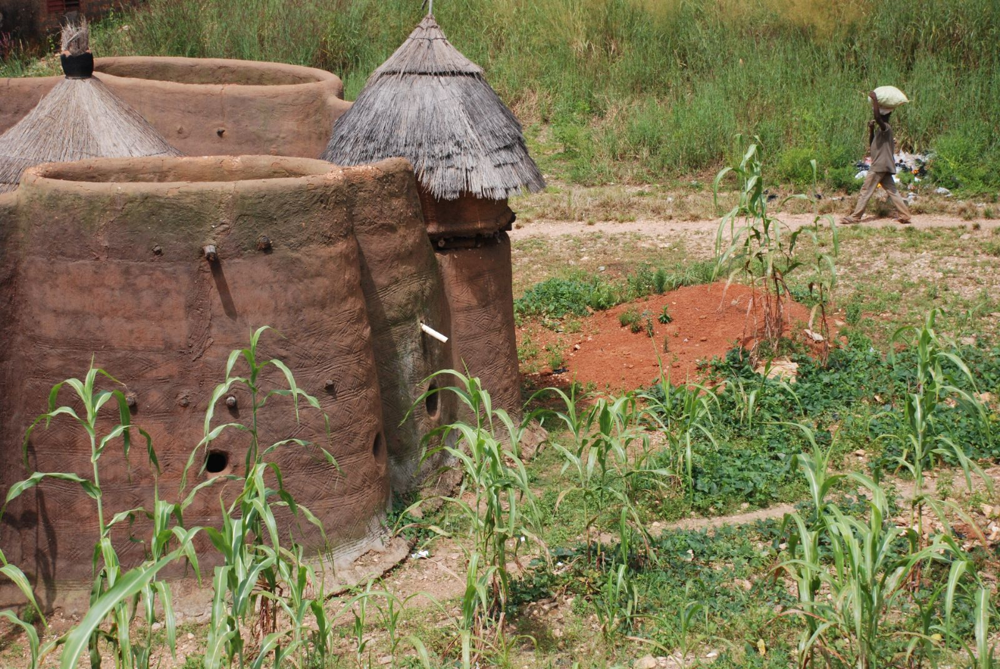
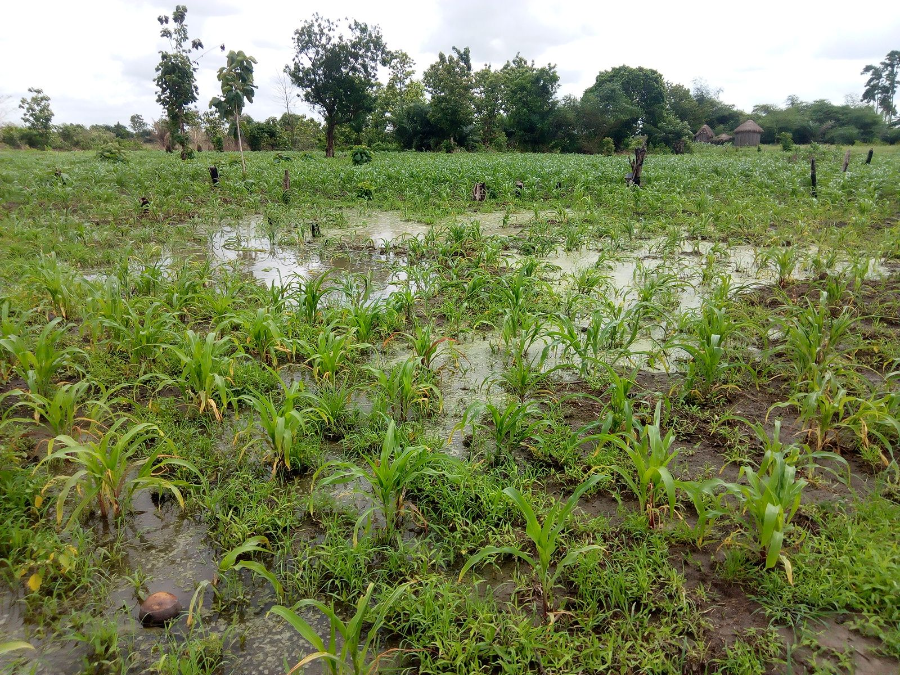
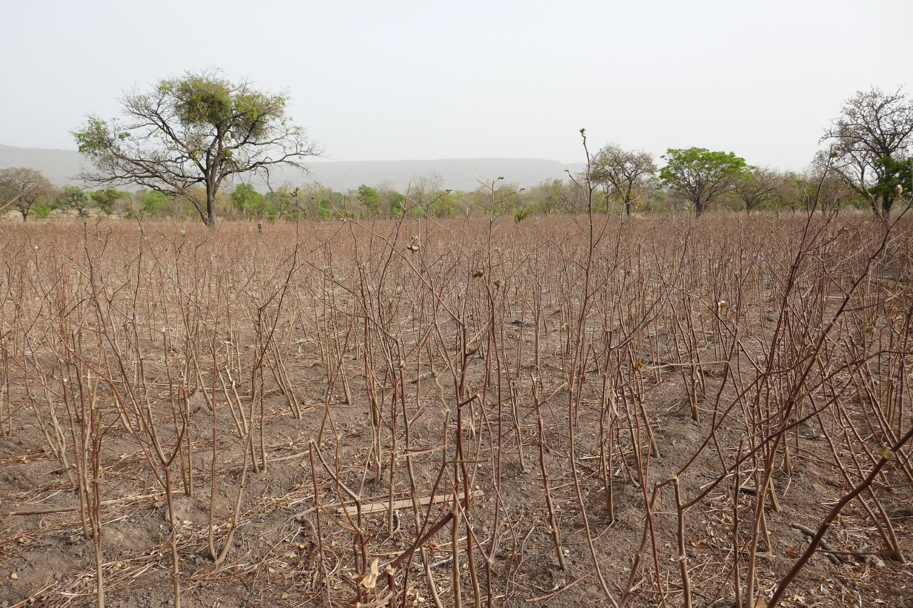
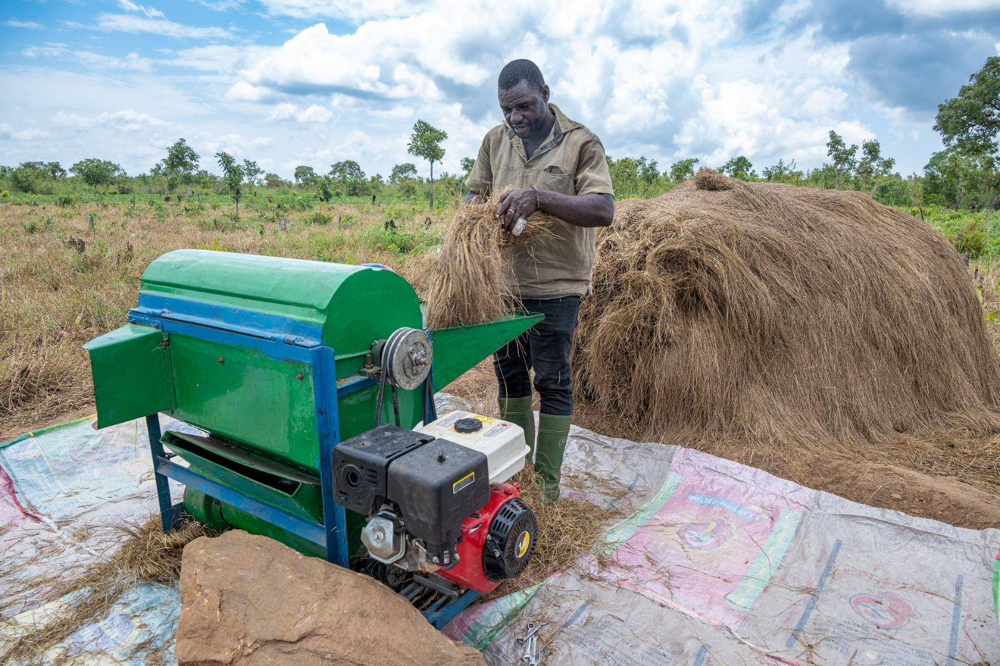
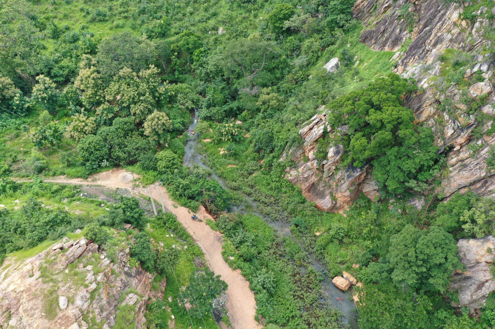

Votre champ, vos conseils, vos appuis : tout tient dans votre téléphone.
Inscrivez-vous en deux minutes avec votre numéro. Suivez chaque parcelle du semis à la récolte, recevez les alertes de votre agent ATDA et vendez votre récolte au bon prix.
Semis
Notez la date et la variété semée : l'application cale vos rappels et vos conseils sur votre propre calendrier.
Croissance
Sous terre, le grain gonfle et la racine plonge. En surface, vous recevez les alertes de ravageurs et de pluie de votre département.
Floraison
Feuille tachée, épi suspect ? Une photo suffit pour un premier avis, revu par un agronome quand le doute subsiste.
Récolte
Déclarez votre récolte, publiez une offre sur le marché et rencontrez acheteurs et transformateurs en direct.
Chiffres du POC
200 873 fermes du POC 12 départements 77 communes 13 filières prioritaires
Données de démonstration du POC.
Trois étapes, et votre exploitation est en ligne.
Inscrivez-vous avec votre numéro
Pas de mot de passe à retenir : un code arrive par SMS à chaque connexion.
Votre agent ATDA valide votre fiche
Il confirme votre identité et vos parcelles : vous devenez éligible aux programmes d'appui.
Recevez, suivez, vendez
Alertes, conseils, appuis et marché arrivent au même endroit, campagne après campagne.
Pensé pour le terrain, construit pour la confiance.
- Même sans réseau
- Saisissez au champ : tout part dès que le réseau revient.
- Dans votre langue
- Français, fon, bariba, yoruba et dendi ; les traductions sont en cours de validation.
- Vos données vous appartiennent
- Rien n'est partagé avec un organisme de crédit sans votre accord, et vous pouvez le retirer à tout moment.
- Chaque accès est tracé
- Un journal infalsifiable enregistre qui a consulté quoi, dans le cadre de la loi béninoise 2017-20 sur le numérique.
Le Bénin agricole
Les photos d'où la scène est dessinée. Toutes viennent de Wikimedia Commons, avec leur auteur et leur licence.










Une plateforme, tous les acteurs de la filière.
Producteurs
Gérez vos parcelles, recevez conseils et alertes, touchez vos appuis et vendez votre récolte.
Agents ATDA
Validez les fiches, alertez tout un département en un message et tracez chaque remise d'appui.
Coopératives
Suivez vos membres et regroupez l'offre pour peser sur le marché.
MAEP et MTDI
Pilotez avec des indicateurs à jour, sélectionnez les bénéficiaires en transparence, auditez chaque accès.
Vos questions
Faut-il un smartphone ?
L'application s'ouvre dans le navigateur de n'importe quel téléphone récent, sans rien installer. Les alertes sont prévues aussi par SMS pour les téléphones simples.
Et si je n'ai pas de réseau au champ ?
Vous pouvez saisir hors connexion. Vos données sont gardées sur le téléphone et envoyées automatiquement au retour du réseau.
Qui voit mes informations ?
Vous, votre agent ATDA et les responsables des programmes qui vous concernent. Un organisme de crédit ne les voit qu'avec votre accord.
Comment obtenir des appuis ?
Une fois votre fiche validée, postulez aux programmes ouverts depuis votre espace. Vous êtes prévenu de la décision et pouvez la contester.
Les conseils sont-ils fiables ?
Chaque réponse cite la fiche technique dont elle vient ; ces fiches seront relues par l'INRAB et les ATDA avant la mise en service. Pour tout dosage, l'assistant vous oriente vers votre agent.
Votre espace vous attend.
Producteur ou agent ATDA : quelques secondes avec votre téléphone suffisent pour commencer.
Je suis producteur
- Inscription avec mon numéro, sans mot de passe
- Mes parcelles et campagnes suivies
- Alertes, appuis et marché au même endroit
Je suis agent ATDA
- Validation des fiches de mon secteur
- Alertes par département
- Suivi des remises d'appuis